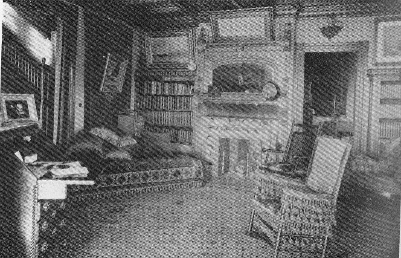

Inside "Quarry
Farm" Main House

picture courtesy of Mark Twain in Elmira
"The farm is perfectly
delightful this season. It is as quiet and peaceful as a South Sea
island. Some of
the sunsets we have witnessed from this commanding eminence were
marvelous." letter to William
Dean Howells, September 1876, Elmira, NY, as quoted in Mark Twain in Elmira
back
to house exterior